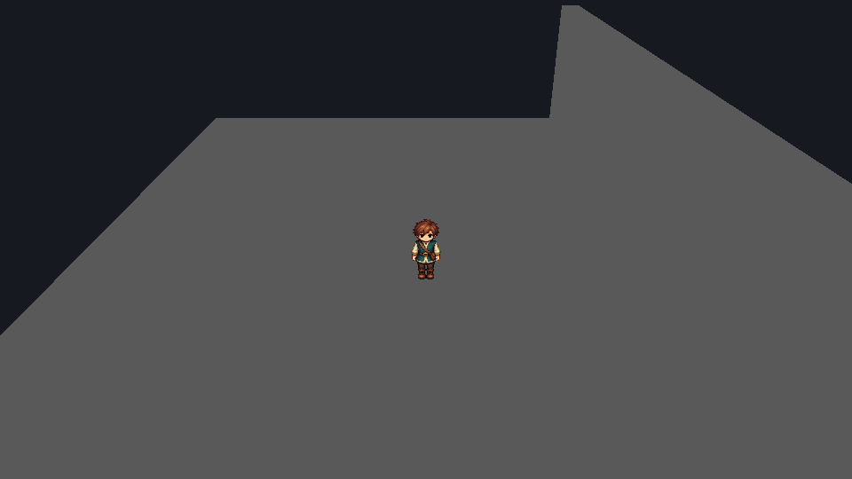
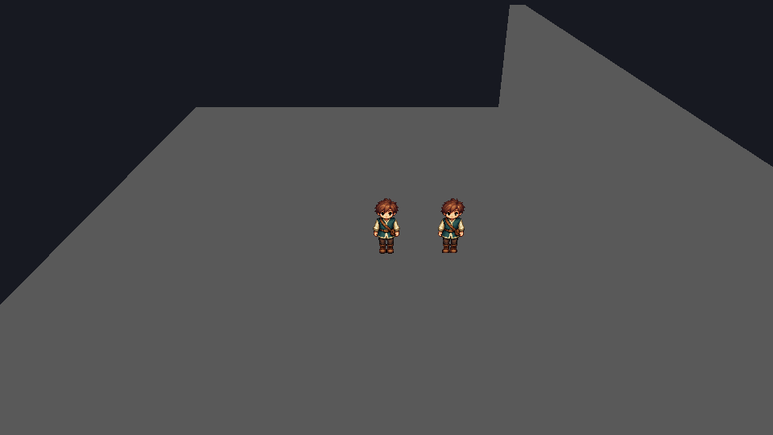

XZ 지면 · Y 높이
도트 캐릭터를 3D 공간에서 움직이세요.
캐릭터 3D와 충돌 3D를 배치하면 걷기·점프·중력·벽·천장·경사·낮은 턱을 같은 물리 계산으로 처리합니다. 메시의 모양과 충돌은 별도로 설정합니다.
- 하이어라키 + → 캐릭터 3D를 추가하고 BillboardRenderer에 PNG 또는 .anim을 연결합니다.
- 캐릭터는 최상위·회전 없음·양수 스케일을 사용합니다. Collider3D의 half·offset은 로컬 단위이며 스케일이 적용됩니다.
- 충돌 3D로 바닥과 벽을 만듭니다. 경사 3D는 -Z에서 +Z로 올라갑니다. 바닥 위에 발을 배치합니다.
- KinematicBody3D.settings에서 speed·gravity·jumpSpeed·floorSnap·stepHeight를 조절하고 저장한 뒤 Play를 누릅니다.
WASD/방향키로 이동, Space로 접지 중 점프합니다. 트리거·ScenePortal·ObjectBehavior는 로컬 Play의 XYZ 위치를 사용합니다. 순간 이동과 이전 틱의 접지/속도 조회는 XYZ Lua API를 참고하세요.
이 구성을 사용하는 이유
그림 크기와 충돌 크기를 분리하면 외형을 바꾸어도 이동 규칙을 유지할 수 있습니다. 로컬·서버·예측이 같은 PhysicsWorld3D::Step을 사용하므로 벽이나 경사에서 계산 방식이 달라지지 않습니다. 깊게 박힌 시작 위치는 오류로 거부합니다.
플레이 중 시점을 360° 돌리세요.
게임 카메라 3D의 orbitEnabled를 켜면 Q/R 또는 오른쪽 마우스 드래그로 yaw를 회전합니다. cameraRelative 캐릭터는 화면 방향을 기준으로 이동합니다.
- current 카메라는 하나만 사용합니다. followTarget에 캐릭터의 고유 이름을 지정합니다.
- target=(0,1,0), orbitEnabled=true, pitchDegrees=25, distance=8부터 시작합니다.
- rotationSpeed는 도/초, mouseSensitivity는 도/픽셀입니다. 정적 장애물 앞에서는 collisionMargin을 두고 카메라 거리가 줄어듭니다.

저장한 시점별 렌더 GIF 보기
저장한 yaw 값을 45°씩 바꿔 공식 앱에서 캡처했습니다. 이 GIF는 렌더 비교 자료이며 실제 마우스/키 조작의 검증 자료가 아닙니다.
MyGame은 패드 왼쪽 스틱 이동·A 점프·오른쪽 스틱 회전도 받습니다. 활성 게임 창에만 입력을 전달합니다. 실제 장치·UI 포커스 검수는 별도로 필요합니다. 카메라 회전은 캐릭터의 월드 방향을 바꾸지 않으며, 카메라 상대 8방향 도트 에셋 자동 매핑은 아직 없습니다.
같은 장면에 두 계정으로 접속하세요.
배포본의 MyServer와 MyGame으로 인증·캐릭터 소유권·XYZ 이동·예측/보정·복제·저장/재접속을 확인할 수 있습니다. 서버는 127.0.0.1에 바인딩하는 개발 전송입니다.
MyServer.exe --data "private/server" --register tester "local-test-password"
MyServer.exe --data "private/server" --make-char tester Hero
MyServer.exe --data "private/server" --project "game/project.myeproj"
MyGame.exe --project "game/project.myeproj" --connect 127.0.0.1:27015 --credentials "private/login.json"login.json 형식은 {"username":"tester","password":"local-test-password"}입니다. 합성 로컬 계정으로 시작하고 계정 파일·서버 데이터는 에셋이나 Git에 넣지 마세요. 두 번째 계정을 만든 뒤 별도 MyGame을 실행합니다. --character ID로 소유 캐릭터를 선택할 수 있습니다.

서버와 게임이 같은 장면을 사용하는 이유
서버가 충돌 데이터를 소유하고 입력 순서마다 60 Hz 물리를 계산합니다. 클라이언트는 같은 계산으로 미확인 입력을 재실행합니다. 장면 JSON 호환 지문·캐릭터 소유권·세션 토큰·길이·수치 범위를 검사합니다. 호환 지문은 인증 증명이 아닙니다.
현재 계약 안에서 제작하세요.
정적 축 정렬 상자와 +Z 경사, 활성 조작 캐릭터 하나, 동일 장면 온라인을 지원합니다. 임의 메시/회전 충돌·동적 강체·플랫폼·NPC 내비게이션·온라인 포털/게임 규칙/채팅/HUD·AOI·암호화·게임 내보내기는 연결하지 않았습니다. 스냅샷 최대 24개는 성능 보장이 아닙니다.
근거와 수치 범위는 상세 계약, 남은 완료 조건은 개발 우선순위에 있습니다. Godot 공식 소스의 이동 투영·카메라 캐스트·권위 경계를 참고했으며 MIT 고지는 배포본 licenses에 보존합니다.